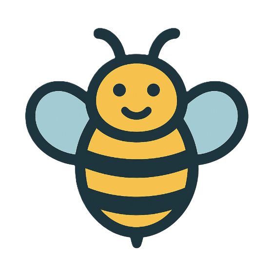
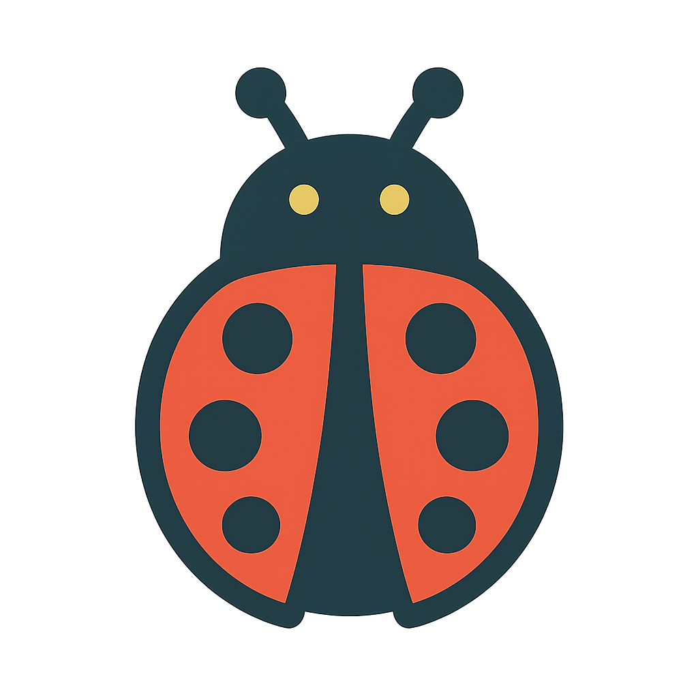
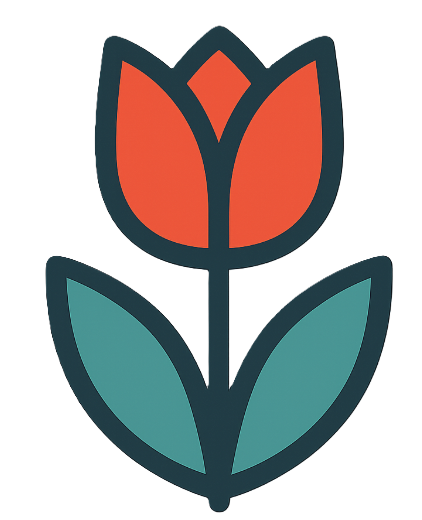

Naam: Datum:
Geheime boodschap
Gebruik de geheime sleutel en ontcijfer de boodschap.
Vervang letters door afbeeldingen en maak een speels decodeerwerkblad.
Gebruik een kant-en-klaar thema of upload 23 eigen afbeeldingen.
Jij kiest de sleutel en de boodschap. Op het afgewerkte werkblad bekijken je leerlingen de sleutel en schrijven ze de juiste letters in de lege vakjes.

A
B
CGebruik de geheime sleutel en ontcijfer de boodschap.